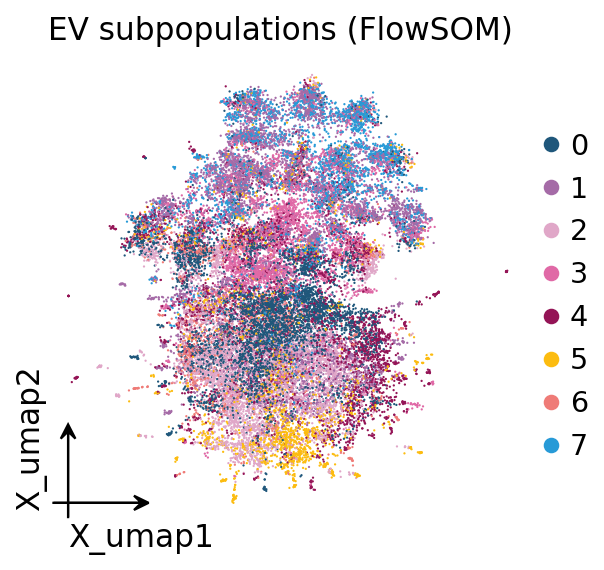
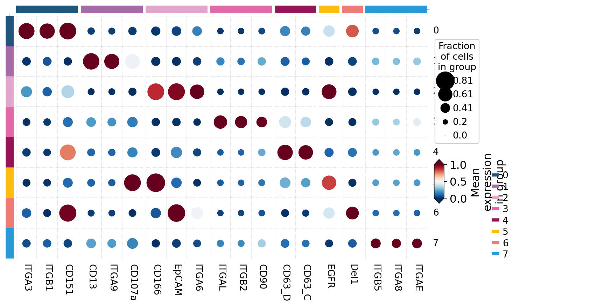

Single-extracellular-vesicle (single-EV) proteomics#
Extracellular vesicles (EVs) — exosomes and microvesicles — are nanoscale membrane particles that every cell releases into its surroundings. They carry a surface-protein cargo that reflects their cell of origin, and they are intense biomarker candidates for liquid biopsy. Until recently EV proteomics was almost always bulk: a preparation of millions of vesicles was lysed and measured together, giving one averaged protein profile. That average hides the central fact about EVs — a preparation is a mixture of vesicle subpopulations, and a bulk measurement can never tell you whether two markers are on the same vesicle or merely in the same tube.
Single-EV proteomics measures the protein content of individual vesicles. The natural data structure is an EV x protein matrix — each row one vesicle, each column one protein/marker target — which is structurally identical to a single-cell cell x gene matrix (a vesicle plays the role of a cell, a protein marker the role of a gene). The entire single-cell analysis stack therefore transfers: QC, normalization, dimensionality reduction, subpopulation clustering, marker discovery and differential analysis.
ov.single.ev is the omicverse module for this modality. It implements the
full single-EV pipeline behind one API and supports three measurement
value types — sequencing counts, imaging/flow intensity and digital
binary calls — so the same functions work whatever the platform.
This notebook runs the comprehensive pipeline on real sequencing-count data: the Proximity Barcoding Assay (PBA) of Wu et al., Nat Commun 2019 (10:3854; PMID 31477692), which barcodes individual exosomes and reads out their surface proteins by next-generation sequencing. Analysis follows the MISEV2023 minimal- information framework (Welsh et al., J Extracell Vesicles 2024).
1. Load the data and inspect it#
ov.datasets.ev_pba() downloads the real PBA dataset — a curated
75,000-EV x 40-surface-protein tutorial subset spanning 15 samples: 13
cancer/normal cell-line exosome populations and 2 human-serum exosome
samples. Each row is one individual exosome (a PBA complex identified by
its barcode); each value is a sequencing read count for one
surface-protein antibody. The measurement value type is recorded in
uns['ev']['value_type'] — here 'count'.
import omicverse as ov
import matplotlib.pyplot as plt
ov.plot_set(font_path='Arial')
adata = ov.datasets.ev_pba()
adata
🔬 Starting plot initialization...
Using already downloaded Arial font from: /tmp/omicverse_arial.ttf
Registered as: Arial
🧬 Detecting GPU devices…
🚫 No GPU devices found (CUDA/MPS/ROCm/XPU)
____ _ _ __
/ __ \____ ___ (_)___| | / /__ _____________
/ / / / __ `__ \/ / ___/ | / / _ \/ ___/ ___/ _ \
/ /_/ / / / / / / / /__ | |/ / __/ / (__ ) __/
\____/_/ /_/ /_/_/\___/ |___/\___/_/ /____/\___/
🔖 Version: 2.2.1rc1 📚 Tutorials: https://omicverse.readthedocs.io/
✅ plot_set complete.
🔍 Downloading data to ./data/ev_pba.h5ad
⚠️ File ./data/ev_pba.h5ad already exists
AnnData object with n_obs × n_vars = 75000 × 40
obs: 'sample', 'source', 'sample_type', 'condition', 'complex_tag', 'total_counts', 'n_proteins'
uns: 'ev'
# the per-EV metadata: sample, biological source, cancer/normal condition
adata.obs[['sample', 'source', 'sample_type', 'condition']].head()
| sample | source | sample_type | condition | |
|---|---|---|---|---|
| ev_id | ||||
| A549|TCCTGTTGCTAGTGT | A549 | lung adenocarcinoma | cell_line | cancer |
| A549|ATCTAAAAAATACAG | A549 | lung adenocarcinoma | cell_line | cancer |
| A549|GAGCGGTCACATCAA | A549 | lung adenocarcinoma | cell_line | cancer |
| A549|ATAATATTTAGCTTA | A549 | lung adenocarcinoma | cell_line | cancer |
| A549|AGCTAACCTTCGGCC | A549 | lung adenocarcinoma | cell_line | cancer |
# how many individual exosomes per sample, and the measurement value type
print(adata.obs['sample'].value_counts())
print()
print('value type :', adata.uns['ev']['value_type'])
print('assay :', adata.uns['ev']['assay'])
sample
A549 5000
AGS 5000
BLC21 5000
Daudi 5000
HCT116 5000
HEK293 5000
K562 5000
MKN45 5000
MKN7 5000
MM1 5000
PC3 5000
SK-N-SH 5000
Serum-1 5000
Serum-2 5000
U87MG 5000
Name: count, dtype: int64
value type : count
assay : Proximity Barcoding Assay
2. Quality control#
Single-EV QC targets artifacts that are specific to vesicle data, not cell
data. ov.single.ev.qc removes EVs with too few detected proteins
(membrane fragments, free antibody, background), removes or caps EVs with
implausibly high total signal (doublets / barcode collisions where two
vesicles are read as one tag) and drops proteins detected in too few EVs.
Here we require at least 2 detected proteins per EV and keep proteins
present in at least 0.5% of vesicles.
adata = ov.single.ev.qc(adata, min_proteins=2, min_ev_frac=0.005)
qc = adata.uns['ev']['qc']
print(f"EVs: {qc['n_ev_in']:,} -> {qc['n_ev_out']:,} "
f"({qc['n_ev_removed']:,} removed)")
print(f"proteins: {qc['n_proteins_in']} -> {qc['n_proteins_out']}")
print(f"high-signal (doublet) cut: {qc['high_signal_cut']:.1f}")
EVs: 75,000 -> 46,839 (28,161 removed)
proteins: 40 -> 40
high-signal (doublet) cut: 19.8
About 28,000 low-information EVs (membrane fragments / barcodes with too few reads) are removed, leaving ~47,000 informative exosomes — a typical attrition for sparse single-EV sequencing data. The PBA panel is small (40 antibodies) so all 40 proteins are retained.
A MISEV2023 purity assessment quantifies co-isolated non-vesicular
contaminants — lipoproteins (ApoA1/ApoB), albumin, organelle proteins.
contaminant_score writes per-EV scores and a preparation-level summary.
adata = ov.single.ev.contaminant_score(adata)
contam = adata.uns['ev']['contaminant']
print('preparation purity :', round(contam['purity'], 3))
print('contaminant markers found :', contam['markers_found'])
preparation purity : 1.0
contaminant markers found : {'lipoprotein': [], 'albumin': [], 'organelle': []}
The purity score is 1.0 and no contaminant markers were found — the PBA panel was deliberately designed from tetraspanins, integrins and other genuine EV surface proteins, so it contains no lipoprotein/albumin/ organelle targets to begin with. This is honest: purity here reflects panel design, not a contaminant-free preparation per se.
Before normalizing, we take a MISEV-style snapshot of the raw counts with
ev_summary — once normalize overwrites X, the raw per-EV totals are
no longer in X (they remain in layers['counts']).
ov.single.ev.ev_summary(adata, cluster_key=None)
| n_evs | n_proteins | n_subpopulations | n_samples | value_type | platform | mean_proteins_per_ev | median_total_signal | qc_pass_rate | |
|---|---|---|---|---|---|---|---|---|---|
| 0 | 46839 | 40 | 0 | 15 | count | unknown | 3.368368 | 5.0 | 1.0 |
3. Source x protein abundance — reproducing PBA Fig. 4a#
The original PBA study (Wu et al., Nat Commun 2019, Fig. 4a) opens
its biological analysis with a source x protein abundance heatmap: the
per-EV molecule counts are aggregated to the level of each source (the
13 cell lines plus 2 human-serum samples) and shown as
log(moleculeTag+1), rows = sources, columns = antibody targets. It is
the pseudobulk view of single-EV data — collapse the millions of
vesicles back to one profile per source and ask which source carries
which surface protein.
We reproduce it directly. ov.single.ev.pseudobulk aggregates the QC’d
per-EV matrix to a 15-source x 40-protein matrix; we log1p it and draw
the sample x protein heatmap with the generic ov.pl.group_heatmap. This
is the bulk-level summary that precedes the single-vesicle analysis —
the rest of the notebook then goes beyond it.
# PBA Fig. 4a: aggregate per-EV counts to a source x protein matrix
pb_src = ov.single.ev.pseudobulk(adata, sample_key='sample', mode='mean')
pb_src.X = ov.np.log1p(pb_src.X) # log(moleculeTag+1), as in Fig. 4a
pb_src.obs['sample'] = pb_src.obs.index.astype('category')
ov.pl.group_heatmap(pb_src, var_names=list(pb_src.var_names), groupby='sample',
standard_scale='var', cmap='magma', figsize=(9, 5),
label='log(tag+1)')
plt.show()
{kind=link}
4. Normalization#
The normalization step is the one place the single-cell stack must branch
on the assay’s value type, so ov.single.ev.normalize is EV-specific. PBA
produces sequencing counts, so the right transform is the
centered-log-ratio (CLR) — the same transform CITE-seq uses for
antibody-derived tags. CLR removes the per-EV composition/depth effect by
dividing through the per-vesicle geometric mean. method='auto' reads
uns['ev']['value_type'] and picks CLR automatically for count data. We
normalize the full QC’d set here — CLR is a per-vesicle transform — so
that the stratified embedding in Section 5 and every downstream subset
share one consistent normalization.
# normalize the full QC'd set (CLR is a per-vesicle transform)
ov.single.ev.normalize(adata, method='auto')
print('normalization method :', adata.uns['ev']['normalize']['method'])
print('value type :', adata.uns['ev']['value_type'])
normalization method : clr
value type : count
5. Stratified embedding — reproducing PBA Fig. 4b#
PBA data is exceptionally sparse: most vesicles carry just 1-2 detected proteins. EVs with so few detected proteins share near-identical presence/absence patterns and cannot be resolved by source.
The original PBA study (Wu et al., Nat Commun 2019, Fig. 4b) addressed this with three t-SNE panels side by side — exosomes with 1, 2, and >=3 detected proteins — each coloured by source. The finding: 1-protein exosomes give no good distinction between sources (a radial “firework” sparsity artifact), 2-protein exosomes are still ambiguous, and only the >=3-protein subset resolves same-source exosomes into coherent regions. The paper used t-SNE and did not attempt formal clustering on the sparse data.
We reproduce all three panels faithfully. The Section-2 QC kept only EVs
with >=2 detected proteins, so to recover the 1-protein stratum we
apply a permissive QC (min_proteins=1) to a fresh copy of the data,
normalize it, and split on obs['n_proteins'] into the 1 / 2 / >=3
strata. Each stratum is z-scored (ov.pp.scale), reduced (ov.pp.pca,
small panel so a low n_pcs) and embedded with t-SNE (ov.pp.tsne,
as in the paper). The three embeddings are then drawn together, coloured
by source. This section both reproduces Fig. 4b and motivates running
the rest of the pipeline on the informative >=3-protein subset of the
standard (min_proteins=2) QC’d data.
# permissive QC on a fresh copy recovers the 1-protein EVs for Fig. 4b
viz = ov.single.ev.qc(ov.datasets.ev_pba(), min_proteins=1, min_ev_frac=0.005)
ov.single.ev.normalize(viz, method='auto')
ev1 = viz[viz.obs['n_proteins'] == 1].copy()
ev2 = viz[viz.obs['n_proteins'] == 2].copy()
ev3 = viz[viz.obs['n_proteins'] >= 3].copy()
print(f"1-protein: {ev1.n_obs:,} 2-protein: {ev2.n_obs:,} "
f">=3-protein: {ev3.n_obs:,} of {viz.n_obs:,} EVs")
🔍 Downloading data to ./data/ev_pba.h5ad
⚠️ File ./data/ev_pba.h5ad already exists
1-protein: 21,776 2-protein: 17,781 >=3-protein: 29,058 of 68,615 EVs
# Fig. 4b panel 1: embed the 1-detected-protein stratum (scale -> PCA -> t-SNE)
ov.pp.scale(ev1, max_value=10, layers_add='scaled')
ov.pp.pca(ev1, layer='scaled', n_pcs=30)
ov.pp.tsne(ev1, use_rep='scaled|original|X_pca', n_pcs=30)
╭─ SUMMARY: scale ───────────────────────────────────────────────────╮
│ Duration: 0.0331s │
│ Shape: 21,776 x 40 (Unchanged) │
│ │
│ CHANGES DETECTED │
│ ──────────────── │
│ ● UNS │ ✚ REFERENCE_MANU │
│ │ ✚ _ov_provenance │
│ │ ✚ status │
│ │ ✚ status_args │
│ │
│ ● LAYERS │ ✚ scaled (array, 21776x40) │
│ │
╰────────────────────────────────────────────────────────────────────╯
computing PCA🔍
with n_comps=30
🖥️ Using sklearn PCA for CPU computation
🖥️ sklearn PCA backend: CPU computation
📊 PCA input data type: ndarray, shape: (21776, 40), dtype: float64
🔧 PCA solver used: covariance_eigh
finished✅ (0.04s)
╭─ SUMMARY: pca ─────────────────────────────────────────────────────╮
│ Duration: 0.0439s │
│ Shape: 21,776 x 40 (Unchanged) │
│ │
│ CHANGES DETECTED │
│ ──────────────── │
│ ● UNS │ ✚ pca │
│ │ └─ params: {'zero_center': True, 'use_highly_variable': Fa...│
│ │ ✚ scaled|original|cum_sum_eigenvalues │
│ │ ✚ scaled|original|pca_var_ratios │
│ │
│ ● OBSM │ ✚ X_pca (array, 21776x30) │
│ │ ✚ scaled|original|X_pca (array, 21776x30) │
│ │
╰────────────────────────────────────────────────────────────────────╯
🖥️ Using sklearn CPU t-SNE...
╭─ SUMMARY: tsne ────────────────────────────────────────────────────╮
│ Duration: 41.2834s │
│ Shape: 21,776 x 40 (Unchanged) │
│ │
│ CHANGES DETECTED │
│ ──────────────── │
│ ● UNS │ ✚ tsne │
│ │ └─ params: {'n_components': 2, 'perplexity': 30, 'early_ex...│
│ │
│ ● OBSM │ ✚ X_tsne (array, 21776x2) │
│ │
╰────────────────────────────────────────────────────────────────────╯
# Fig. 4b panel 2: embed the 2-detected-protein stratum
ov.pp.scale(ev2, max_value=10, layers_add='scaled')
ov.pp.pca(ev2, layer='scaled', n_pcs=30)
ov.pp.tsne(ev2, use_rep='scaled|original|X_pca', n_pcs=30)
╭─ SUMMARY: scale ───────────────────────────────────────────────────╮
│ Duration: 0.0135s │
│ Shape: 17,781 x 40 (Unchanged) │
│ │
│ CHANGES DETECTED │
│ ──────────────── │
│ ● UNS │ ✚ REFERENCE_MANU │
│ │ ✚ _ov_provenance │
│ │ ✚ status │
│ │ ✚ status_args │
│ │
│ ● LAYERS │ ✚ scaled (array, 17781x40) │
│ │
╰────────────────────────────────────────────────────────────────────╯
computing PCA🔍
with n_comps=30
🖥️ Using sklearn PCA for CPU computation
🖥️ sklearn PCA backend: CPU computation
📊 PCA input data type: ndarray, shape: (17781, 40), dtype: float64
🔧 PCA solver used: covariance_eigh
finished✅ (0.03s)
╭─ SUMMARY: pca ─────────────────────────────────────────────────────╮
│ Duration: 0.0309s │
│ Shape: 17,781 x 40 (Unchanged) │
│ │
│ CHANGES DETECTED │
│ ──────────────── │
│ ● UNS │ ✚ pca │
│ │ └─ params: {'zero_center': True, 'use_highly_variable': Fa...│
│ │ ✚ scaled|original|cum_sum_eigenvalues │
│ │ ✚ scaled|original|pca_var_ratios │
│ │
│ ● OBSM │ ✚ X_pca (array, 17781x30) │
│ │ ✚ scaled|original|X_pca (array, 17781x30) │
│ │
╰────────────────────────────────────────────────────────────────────╯
🖥️ Using sklearn CPU t-SNE...
╭─ SUMMARY: tsne ────────────────────────────────────────────────────╮
│ Duration: 59.0307s │
│ Shape: 17,781 x 40 (Unchanged) │
│ │
│ CHANGES DETECTED │
│ ──────────────── │
│ ● UNS │ ✚ tsne │
│ │ └─ params: {'n_components': 2, 'perplexity': 30, 'early_ex...│
│ │
│ ● OBSM │ ✚ X_tsne (array, 17781x2) │
│ │
╰────────────────────────────────────────────────────────────────────╯
# Fig. 4b panel 3: embed the informative >=3-detected-protein stratum
ov.pp.scale(ev3, max_value=10, layers_add='scaled')
ov.pp.pca(ev3, layer='scaled', n_pcs=30)
ov.pp.tsne(ev3, use_rep='scaled|original|X_pca', n_pcs=30)
print('Fig. 4b panels embedded:', ev1.n_obs, ev2.n_obs, ev3.n_obs, 'EVs')
╭─ SUMMARY: scale ───────────────────────────────────────────────────╮
│ Duration: 0.0248s │
│ Shape: 29,058 x 40 (Unchanged) │
│ │
│ CHANGES DETECTED │
│ ──────────────── │
│ ● UNS │ ✚ REFERENCE_MANU │
│ │ ✚ _ov_provenance │
│ │ ✚ status │
│ │ ✚ status_args │
│ │
│ ● LAYERS │ ✚ scaled (array, 29058x40) │
│ │
╰────────────────────────────────────────────────────────────────────╯
computing PCA🔍
with n_comps=30
🖥️ Using sklearn PCA for CPU computation
🖥️ sklearn PCA backend: CPU computation
📊 PCA input data type: ndarray, shape: (29058, 40), dtype: float64
🔧 PCA solver used: covariance_eigh
finished✅ (0.03s)
╭─ SUMMARY: pca ─────────────────────────────────────────────────────╮
│ Duration: 0.0327s │
│ Shape: 29,058 x 40 (Unchanged) │
│ │
│ CHANGES DETECTED │
│ ──────────────── │
│ ● UNS │ ✚ pca │
│ │ └─ params: {'zero_center': True, 'use_highly_variable': Fa...│
│ │ ✚ scaled|original|cum_sum_eigenvalues │
│ │ ✚ scaled|original|pca_var_ratios │
│ │
│ ● OBSM │ ✚ X_pca (array, 29058x30) │
│ │ ✚ scaled|original|X_pca (array, 29058x30) │
│ │
╰────────────────────────────────────────────────────────────────────╯
🖥️ Using sklearn CPU t-SNE...
╭─ SUMMARY: tsne ────────────────────────────────────────────────────╮
│ Duration: 85.7596s │
│ Shape: 29,058 x 40 (Unchanged) │
│ │
│ CHANGES DETECTED │
│ ──────────────── │
│ ● UNS │ ✚ tsne │
│ │ └─ params: {'n_components': 2, 'perplexity': 30, 'early_ex...│
│ │
│ ● OBSM │ ✚ X_tsne (array, 29058x2) │
│ │
╰────────────────────────────────────────────────────────────────────╯
Fig. 4b panels embedded: 21776 17781 29058 EVs
# PBA Fig. 4b: three t-SNE panels (1 / 2 / >=3 proteins), coloured by source
fig, axes = plt.subplots(1, 3, figsize=(16, 4.6))
ov.pl.embedding(ev1, basis='X_tsne', color='source', ax=axes[0], show=False,
frameon='small', legend_loc=None, title='1 protein / EV')
ov.pl.embedding(ev2, basis='X_tsne', color='source', ax=axes[1], show=False,
frameon='small', legend_loc=None, title='2 proteins / EV')
ov.pl.embedding(ev3, basis='X_tsne', color='source', ax=axes[2], show=False,
frameon='small', title='>=3 proteins / EV')
plt.tight_layout()
plt.show()
{kind=link}
As in the paper’s Fig. 4b, the 1-protein panel is a sparsity artifact
— EVs radiate into a radial “firework” with no source separation, because
a single detected protein cannot distinguish one source from another. The
2-protein panel is still largely ambiguous. Only the >=3-protein
panel resolves: same-source exosomes fall into coherent regions of the
embedding. This is the empirical justification for analysing the
informative >=3-protein subset — we now take that subset of the
standard (min_proteins=2) QC’d, normalized adata as the working
object, z-score it and run PCA, then continue with clustering, marker
discovery and differential analysis.
# adopt the informative >=3-protein subset of the standard-QC'd data
adata_full = adata
adata = adata_full[adata_full.obs['n_proteins'] >= 3].copy()
ov.pp.scale(adata, max_value=10, layers_add='scaled')
ov.pp.pca(adata, layer='scaled', n_pcs=30)
print(f"working set (>=3 proteins): {adata.n_obs:,} of {adata_full.n_obs:,} EVs")
╭─ SUMMARY: scale ───────────────────────────────────────────────────╮
│ Duration: 0.0151s │
│ Shape: 29,058 x 40 (Unchanged) │
│ │
│ CHANGES DETECTED │
│ ──────────────── │
│ ● UNS │ ✚ REFERENCE_MANU │
│ │ ✚ _ov_provenance │
│ │ ✚ status │
│ │ ✚ status_args │
│ │
│ ● LAYERS │ ✚ scaled (array, 29058x40) │
│ │
╰────────────────────────────────────────────────────────────────────╯
computing PCA🔍
with n_comps=30
🖥️ Using sklearn PCA for CPU computation
🖥️ sklearn PCA backend: CPU computation
📊 PCA input data type: ndarray, shape: (29058, 40), dtype: float64
🔧 PCA solver used: covariance_eigh
finished✅ (0.03s)
╭─ SUMMARY: pca ─────────────────────────────────────────────────────╮
│ Duration: 0.0295s │
│ Shape: 29,058 x 40 (Unchanged) │
│ │
│ CHANGES DETECTED │
│ ──────────────── │
│ ● UNS │ ✚ pca │
│ │ └─ params: {'zero_center': True, 'use_highly_variable': Fa...│
│ │ ✚ scaled|original|cum_sum_eigenvalues │
│ │ ✚ scaled|original|pca_var_ratios │
│ │
│ ● OBSM │ ✚ X_pca (array, 29058x30) │
│ │ ✚ scaled|original|X_pca (array, 29058x30) │
│ │
╰────────────────────────────────────────────────────────────────────╯
working set (>=3 proteins): 29,058 of 46,839 EVs
6. The EV neighbor graph#
The working subset was z-scored and reduced with PCA in the previous cell
(scaling and PCA are generic single-cell preprocessing — an EV x protein
matrix is structurally a cell x gene matrix). All that remains before
clustering is the k-nearest-neighbor graph over the EVs, built with the
omicverse-native ov.pp.neighbors. Protein panels are small, so there is
no highly-variable-gene step — every protein is informative and kept — and
n_pcs stays capped below the 40-protein panel size.
# the kNN graph is a generic single-cell step -> omicverse-native ov.pp
ov.pp.neighbors(adata, n_neighbors=15, n_pcs=30,
use_rep='scaled|original|X_pca')
print('PCA components :', adata.obsm['scaled|original|X_pca'].shape[1])
print('variance explained by PC1-3 :',
adata.uns['pca']['variance_ratio'][:3].round(3))
🖥️ Using Scanpy CPU to calculate neighbors...
🔍 K-Nearest Neighbors Graph Construction:
Mode: cpu
Neighbors: 15
Method: umap
Metric: euclidean
Representation: scaled|original|X_pca
PCs used: 30
🔍 Computing neighbor distances...
🔍 Computing connectivity matrix...
💡 Using UMAP-style connectivity
✓ Graph is fully connected
✅ KNN Graph Construction Completed Successfully!
✓ Processed: 29,058 cells with 15 neighbors each
✓ Results added to AnnData object:
• 'neighbors': Neighbors metadata (adata.uns)
• 'distances': Distance matrix (adata.obsp)
• 'connectivities': Connectivity matrix (adata.obsp)
╭─ SUMMARY: neighbors ───────────────────────────────────────────────╮
│ Duration: 35.1067s │
│ Shape: 29,058 x 40 (Unchanged) │
│ │
│ CHANGES DETECTED │
│ ──────────────── │
│ ● UNS │ ✚ neighbors │
│ │ └─ params: {'n_neighbors': 15, 'method': 'umap', 'random_s...│
│ │
│ ● OBSP │ ✚ connectivities (sparse matrix, 29058x29058) │
│ │ ✚ distances (sparse matrix, 29058x29058) │
│ │
╰────────────────────────────────────────────────────────────────────╯
PCA components : 30
variance explained by PC1-3 : [0.077 0.044 0.04 ]
7. EV-subpopulation clustering#
EV-subpopulation discovery is the heart of single-EV analysis. We use FlowSOM — the cytometry-standard clustering for marker-panel data — on the informative ≥3-protein subset. A self-organizing map is trained on the EV x protein matrix, then the SOM nodes are hierarchically metaclustered into the requested number of vesicle subpopulations. omicverse ships a native pure-Python FlowSOM, so there is no R/Java dependency.
A caveat worth stating up front: this is a targeted 40-plex panel and the data, even after the informative-subset filter, is still sparse. The FlowSOM marker heatmap / dotplot (Section 10) is therefore the primary structural readout — it is what defines and validates each subpopulation by its surface-protein program. The 2-D embedding below is a coarse visual aid, not a source of crisp, well-separated clusters.
ov.single.ev.flowsom(adata, n_clusters=8, grid=(10, 10), n_epochs=20)
print(adata.obs['flowsom'].value_counts().sort_index())
flowsom
0 4900
1 5214
2 5186
3 3341
4 3340
5 1970
6 1855
7 3252
Name: count, dtype: int64
FlowSOM partitions the informative subset into 8 EV subpopulations of broadly comparable size. We also run Leiden graph-community detection — the single-cell standard — for comparison.
# graph-community detection is generic single-cell -> omicverse-native ov.pp.leiden
ov.pp.leiden(adata, resolution=0.3, key_added='leiden')
print('Leiden subpopulations :', adata.obs['leiden'].nunique())
🖥️ Using Scanpy CPU Leiden...
running Leiden clustering
finished (2.40s)
found 28 clusters and added
'leiden', the cluster labels (adata.obs, categorical)
╭─ SUMMARY: leiden ──────────────────────────────────────────────────╮
│ Duration: 2.4386s │
│ Shape: 29,058 x 40 (Unchanged) │
│ │
│ CHANGES DETECTED │
│ ──────────────── │
│ ● OBS │ ✚ leiden (category) │
│ │
│ ● UNS │ ✚ leiden │
│ │ └─ params: {'resolution': 0.3, 'random_state': 0, 'n_itera...│
│ │
╰────────────────────────────────────────────────────────────────────╯
Leiden subpopulations : 28
Leiden returns far more clusters than FlowSOM. This is expected and worth
stating honestly: even on the ≥3-protein subset, PBA data is sparse and
targeted, so the EV kNN graph fragments into many tiny communities. For
sparse marker-panel single-EV data FlowSOM is the more robust choice,
and we use the FlowSOM labels as the EV subpopulations for the rest of the
notebook. Graph-community detection (Leiden) is itself generic, so we use
the omicverse-native ov.pp.leiden.
8. UMAP embedding#
A UMAP gives a 2-D view of the subset. Read it as a coarse aid, not as
crisp subpopulations. With a sparse 40-plex panel the embedding will look
modest — the FlowSOM marker heatmap/dotplot in Section 10 is the primary,
quantitative description of the subpopulation structure. The UMAP here
simply shows that the FlowSOM labels occupy coherent regions and that a
tetraspanin signal varies smoothly across the embedding. The embedding and
its scatter are generic single-cell steps, so we use ov.pp.umap and
ov.pl.embedding.
# UMAP + the embedding scatter are generic single-cell -> omicverse-native ov.pp / ov.pl
ov.pp.umap(adata)
ov.pl.embedding(adata, basis='X_umap', color='flowsom', frameon='small',
title='EV subpopulations (FlowSOM)')
plt.show()
🔍 [2026-05-21 20:55:03] Running UMAP in 'cpu' mode...
🖥️ Using Scanpy CPU UMAP...
🔍 UMAP Dimensionality Reduction:
Mode: cpu
Method: umap
Components: 2
Min distance: 0.5
{'n_neighbors': 15, 'method': 'umap', 'random_state': 0, 'metric': 'euclidean', 'use_rep': 'scaled|original|X_pca', 'n_pcs': 30}
🔍 Computing UMAP parameters...
🔍 Computing UMAP embedding (classic method)...
✅ UMAP Dimensionality Reduction Completed Successfully!
✓ Embedding shape: 29,058 cells × 2 dimensions
✓ Results added to AnnData object:
• 'X_umap': UMAP coordinates (adata.obsm)
• 'umap': UMAP parameters (adata.uns)
✅ UMAP completed successfully.
╭─ SUMMARY: umap ────────────────────────────────────────────────────╮
│ Duration: 20.6621s │
│ Shape: 29,058 x 40 (Unchanged) │
│ │
│ CHANGES DETECTED │
│ ──────────────── │
│ ● UNS │ ✚ umap │
│ │ └─ params: {'a': np.float64(0.5830300203414425), 'b': np.f...│
│ │
│ ● OBSM │ ✚ X_umap (array, 29058x2) │
│ │
╰────────────────────────────────────────────────────────────────────╯
{kind=link}

# the same embedding coloured by a tetraspanin marker's signal
ov.pl.embedding(adata, basis='X_umap', color='CD63_C', cmap='magma',
frameon='small', title='CD63 signal per EV')
plt.show()
{kind=link}
9. MISEV2023 marker classification#
classify_markers labels every protein in var with its MISEV2023
category — transmembrane/lipid-bound EV markers, cytosolic EV markers,
co-isolated contaminants, organelle contaminants, or
functional/cell-type/disease markers. It resolves antibody-barcode
suffixes (CD9_A, CD63_C) and CD-antigen shorthand (CD107a →
LAMP-1), so the panel’s genuine EV markers are recognised rather than
dropped into 'other'.
ov.single.ev.classify_markers(adata)
print(adata.var['misev_category'].value_counts())
misev_category
other 25
transmembrane 10
functional 5
Name: count, dtype: int64
Of the 40 PBA proteins, 10 are recognised as transmembrane/lipid-bound
EV markers — the tetraspanins (CD9, CD63, CD151), CD107a/LAMP-1, ADAM10
and integrin transmembrane subunits — and 5 as functional/cell-type
markers (EGFR, EpCAM and other signalling/adhesion proteins). The
remaining 25 fall in 'other': integrin subunits and CD-antigens not in
the core MISEV panels. This reflects the PBA panel’s design focus on
surface adhesion proteins, while still confirming a solid core of bona
fide EV markers is present.
Tetraspanin EV subtypes#
annotate_ev_subtype assigns each vesicle to a tetraspanin-defined
surface subset from CD9/CD63/CD81 positivity — single-, double-,
triple-positive or tetraspanin-negative. MISEV2023 stresses tetraspanins
are not universal EV markers, so the negative class is kept explicit
rather than discarded. The PBA panel carries two CD9 and two CD63
antibody barcodes plus the tetraspanin CD151; we use one of each. The
classifier resolves the _A/_C barcode suffixes to the underlying
tetraspanin identity.
ov.single.ev.annotate_ev_subtype(
adata, tetraspanins=['CD9_A', 'CD63_C', 'CD151'])
print(adata.obs['ev_subtype'].value_counts())
ev_subtype
tetraspanin-negative 13389
CD151-only 6106
CD63_C-only 3953
double-positive (CD63_C/CD151) 2264
CD9_A-only 1733
double-positive (CD9_A/CD151) 686
double-positive (CD9_A/CD63_C) 641
triple-positive 286
Name: count, dtype: int64
The subtypes now resolve correctly: a large tetraspanin-negative fraction (~45-50% of EVs) sits alongside substantial single-positive subsets — CD151-only is the largest, followed by CD63-only and CD9-only — a set of smaller double-positive subsets, and only a small triple-positive core. This is concrete single-vesicle confirmation of the MISEV2023 point that tetraspanins mark only a fraction of EVs, and that CD9, CD63 and CD151 largely label distinct vesicle subsets rather than all co-occurring.
10. Per-subpopulation marker proteins#
rank_markers identifies, for each EV subpopulation, the proteins
enriched in that subpopulation versus all other EVs (Wilcoxon rank-sum,
with effect size, log fold-change and BH-FDR). Together with the heatmap
and dotplot below, this is the primary, quantitative description of
the FlowSOM subpopulations.
markers = ov.single.ev.rank_markers(adata, groupby='flowsom', n_top=3)
markers[['group', 'protein', 'effect_size', 'log2fc', 'frac_in', 'padj']]
| group | protein | effect_size | log2fc | frac_in | padj | |
|---|---|---|---|---|---|---|
| 0 | 0 | ITGA3 | 0.776338 | NaN | 0.567551 | 0.000000e+00 |
| 1 | 0 | ITGB1 | 0.729780 | NaN | 0.505510 | 1.294781e-292 |
| 2 | 0 | CD151 | 0.601613 | 2.051215 | 0.638571 | 0.000000e+00 |
| 3 | 1 | CD13 | 0.938118 | NaN | 0.609705 | 0.000000e+00 |
| 4 | 1 | ITGA9 | 0.776320 | NaN | 0.490986 | 0.000000e+00 |
| 5 | 1 | CD107a | 0.397167 | 2.304287 | 0.462601 | 0.000000e+00 |
| 6 | 2 | CD166 | 0.793371 | 3.508573 | 0.631894 | 0.000000e+00 |
| 7 | 2 | EpCAM | 0.759111 | 3.339216 | 0.643656 | 0.000000e+00 |
| 8 | 2 | ITGA6 | 0.575365 | NaN | 0.444466 | 6.241038e-83 |
| 9 | 3 | ITGAL | 0.683997 | NaN | 0.363963 | 0.000000e+00 |
| 10 | 3 | ITGB2 | 0.576198 | NaN | 0.282251 | 0.000000e+00 |
| 11 | 3 | CD90 | 0.390623 | NaN | 0.189165 | 0.000000e+00 |
| 12 | 4 | CD63_D | 0.681949 | 8.026542 | 0.515868 | 0.000000e+00 |
| 13 | 4 | CD63_C | 0.669449 | NaN | 0.445210 | 0.000000e+00 |
| 14 | 4 | CD151 | 0.348081 | 1.206982 | 0.552695 | 4.174578e-199 |
| 15 | 5 | CD166 | 0.905338 | 2.621310 | 0.811168 | 0.000000e+00 |
| 16 | 5 | CD107a | 0.812671 | 3.549264 | 0.634518 | 0.000000e+00 |
| 17 | 5 | EGFR | 0.341766 | 1.833653 | 0.437563 | 2.092213e-89 |
| 18 | 6 | EpCAM | 0.713413 | 2.331228 | 0.709973 | 2.010303e-257 |
| 19 | 6 | CD151 | 0.528610 | 1.586918 | 0.666307 | 4.566145e-151 |
| 20 | 6 | Del1 | 0.380142 | 3.628360 | 0.323450 | 8.681544e-27 |
| 21 | 7 | ITGB5 | 0.440698 | NaN | 0.148831 | 0.000000e+00 |
| 22 | 7 | ITGA8 | 0.400238 | NaN | 0.112239 | 0.000000e+00 |
| 23 | 7 | ITGAE | 0.387738 | NaN | 0.141759 | 0.000000e+00 |
# dot plot: dot colour = mean signal, dot size = fraction of EVs positive
top_proteins = list(dict.fromkeys(
ov.single.ev.rank_markers(adata, groupby='flowsom', n_top=3)['protein']))
ov.pl.dotplot(adata, top_proteins, groupby='flowsom', use_raw=False,
standard_scale='var', cmap='Reds')
plt.show()
{kind=link}
# protein x subpopulation mean-signal heatmap (per-subpopulation markers)
flowsom_markers = ov.single.ev.rank_markers(adata, groupby='flowsom', n_top=3)
# assign each protein to a single subpopulation for the heatmap row groups
seen, marker_dict = set(), {}
for grp, dfg in flowsom_markers.groupby('group'):
marker_dict[grp] = [p for p in dfg['protein']
if not (p in seen or seen.add(p))]
marker_dict = {g: v for g, v in marker_dict.items() if v}
ov.pl.marker_heatmap(adata, marker_genes_dict=marker_dict, groupby='flowsom',
use_raw=False, standard_scale='var', figsize=(8, 5))
plt.show()
PyComplexHeatmap have been install version: 1.8.5
Starting..
Calculating row orders..
Reordering rows..
Calculating col orders..
Reordering cols..
Plotting matrix..
Inferred max_s (max size of scatter point) is: 524.8521583605069
Collecting legends..
Plotting legends..
Estimated legend width: 74.54333333333334 mm
{kind=link}

The subpopulations carry distinct surface signatures — for example one is defined by the epithelial/tumor markers EpCAM and CD166, another by an integrin module (ITGA3 / ITGB1 / CD151). These are vesicle subpopulations, each with its own protein program.
EV-cargo enrichment#
marker_enrichment tests a subpopulation’s marker proteins against a
curated EV-cargo reference (ExoCarta + Vesiclepedia) by the
hypergeometric distribution — confirming the markers are bona-fide EV
proteins.
ref = ov.datasets.ev_marker_reference()
sub1_markers = ov.single.ev.rank_markers(
adata, groupby='flowsom', n_top=10)
sub1_markers = list(sub1_markers[sub1_markers['group'] == '1']['protein'])
enr = ov.single.ev.marker_enrichment(
adata, markers=sub1_markers,
reference={'Vesiclepedia/ExoCarta': ref['gene_symbol'].tolist()})
enr
🔍 Downloading data to ./data/ev_marker_reference.tsv.gz
⚠️ File ./data/ev_marker_reference.tsv.gz already exists
| reference | n_markers | n_reference | n_overlap | expected | fold_enrichment | pvalue | padj | |
|---|---|---|---|---|---|---|---|---|
| 0 | Vesiclepedia/ExoCarta | 10 | 26 | 7 | 6.5 | 1.076923 | 0.508059 | 0.508059 |
About 26 of the 40 assayed PBA proteins are documented EV cargo in Vesiclepedia/ExoCarta — the panel is overwhelmingly composed of genuine EV proteins, exactly as intended for an EV-surface assay.
11. Marker colocalization — the single-vesicle advantage#
This is the analysis bulk EV proteomics simply cannot do. Because each
row is one physical vesicle, we can ask which markers co-occur on the
same individual EV. colocalization computes, for every marker pair,
the co-positive EV count, Jaccard index, odds ratio, observed/expected
co-positivity and a BH-corrected Fisher’s-exact p-value.
coloc_markers = ['CD9_A', 'CD63_C', 'CD9_B', 'CD63_D', 'CD151', 'CD147']
coloc = ov.single.ev.colocalization(adata, markers=coloc_markers)
coloc[['markers', 'n_copos', 'jaccard', 'odds_ratio', 'obs_exp', 'padj']]
| markers | n_copos | jaccard | odds_ratio | obs_exp | padj | |
|---|---|---|---|---|---|---|
| 0 | CD151+CD147 | 2127 | 0.177828 | 1.924497 | 1.394009 | 3.072239e-88 |
| 1 | CD63_D+CD151 | 1843 | 0.146061 | 1.233433 | 1.119866 | 1.797236e-10 |
| 2 | CD63_C+CD63_D | 1545 | 0.216265 | 4.677923 | 2.456636 | 0.000000e+00 |
| 3 | CD63_C+CD151 | 1351 | 0.116858 | 1.333241 | 1.177099 | 3.275218e-14 |
| 4 | CD63_D+CD147 | 727 | 0.079558 | 0.820823 | 0.869535 | 9.999996e-01 |
| 5 | CD9_B+CD151 | 639 | 0.059019 | 0.901771 | 0.935777 | 9.999996e-01 |
| 6 | CD63_C+CD147 | 484 | 0.061798 | 0.781702 | 0.830071 | 9.999996e-01 |
| 7 | CD9_B+CD63_D | 427 | 0.062647 | 1.193729 | 1.141179 | 2.843672e-03 |
| 8 | CD9_A+CD151 | 405 | 0.038965 | 0.804580 | 0.864612 | 9.999996e-01 |
| 9 | CD9_B+CD147 | 310 | 0.047256 | 0.867796 | 0.893604 | 9.999996e-01 |
| 10 | CD63_C+CD9_B | 304 | 0.056401 | 1.211950 | 1.164975 | 4.402231e-03 |
| 11 | CD9_A+CD63_D | 280 | 0.044473 | 1.120447 | 1.090885 | 1.026759e-01 |
| 12 | CD9_A+CD9_B | 235 | 0.070233 | 2.621437 | 2.206579 | 5.211874e-31 |
| 13 | CD9_A+CD147 | 201 | 0.033489 | 0.813438 | 0.844646 | 9.999996e-01 |
| 14 | CD9_A+CD63_C | 192 | 0.039710 | 1.090640 | 1.072603 | 2.552694e-01 |
ov.single.ev.colocalization_plot(coloc, value='obs_exp', cmap='magma')
plt.show()
{kind=link}
The two independent CD63 antibody barcodes (CD63_C and CD63_D) co-localize on the same vesicles far above chance (odds ratio ~5, observed/expected ~2.8, p < 1e-300) — an internal positive control: two antibodies against the same protein should land on the same EV. CD151 and CD147 also co-occur above expectation (odds ratio ~2.1), pointing to a genuine co-presence of these two surface proteins on a shared vesicle subset. A bulk measurement would only report that all four proteins are “present”; single-EV resolution shows which travel together.
EV protein-signature combinations#
protein_combinations enumerates the exact marker signatures carried by
individual EVs — the multi-marker combinations a vesicle is positive for.
combos = ov.single.ev.protein_combinations(
adata, markers=['CD9_A', 'CD63_C', 'CD9_B', 'CD63_D'])
combos.head(8)
| combination | n_markers | n_ev | fraction | |
|---|---|---|---|---|
| 0 | (none) | 0 | 19495 | 0.670900 |
| 1 | CD63_D | 1 | 3105 | 0.106855 |
| 2 | CD63_C | 1 | 1759 | 0.060534 |
| 3 | CD9_B | 1 | 1358 | 0.046734 |
| 4 | CD63_C+CD63_D | 2 | 1353 | 0.046562 |
| 5 | CD9_A | 1 | 898 | 0.030904 |
| 6 | CD9_B+CD63_D | 2 | 265 | 0.009120 |
| 7 | CD9_A+CD63_D | 2 | 170 | 0.005850 |
Source-selective protein combinations — reproducing PBA Fig. 5a#
The original PBA study’s Fig. 5a is the centrepiece of its single-vesicle biology: it ranks multi-protein combinations — e.g. “CD151 & EpCAM”, “ADAM10 & CD166 & CD63” — by the number of exosomes carrying each, and singles out source-selective combinations: protein signatures that are far more frequent on the exosomes of one source than another. This is the differentially-expressed protein combination (DEPC) analysis, and it is exactly what bulk EV proteomics cannot do — a bulk assay reports the average abundance of each protein separately and is structurally blind to which proteins ride the same vesicle, let alone whether a combination is source-specific.
ov.single.ev.protein_combinations reproduces it. We restrict to two
representative sources — K562 (chronic myeloid leukaemia exosomes) and
Serum-1 (human-serum exosomes) — and a focused 8-marker surface panel
(tetraspanins CD9/CD63/CD151, CD147, ADAM10, and the epithelial/signalling
markers CD166, EpCAM, EGFR). With condition_key='sample' the function
enumerates every protein combination carried by individual exosomes and
runs a BH-corrected Fisher test per combination, returning a DEPC table
ranked by log2 fold-change between the two sources.
# PBA Fig. 5a: source-selective protein combinations (DEPCs), K562 vs Serum-1
panel = ['CD9_A', 'CD63_C', 'CD151', 'CD147', 'ADAM10', 'CD166', 'EpCAM', 'EGFR']
pair = adata[adata.obs['sample'].isin(['K562', 'Serum-1'])].copy()
depc = ov.single.ev.protein_combinations(
pair, markers=panel, condition_key='sample', reference='Serum-1', min_ev=20)
depc[['combination', 'n_markers', 'n_K562', 'n_Serum-1',
'log2_fold_change', 'padj']].head(12)
| combination | n_markers | n_K562 | n_Serum-1 | log2_fold_change | padj | |
|---|---|---|---|---|---|---|
| 0 | CD151+CD147+EpCAM | 3 | 175 | 0 | 25.954637 | 4.691640e-50 |
| 1 | CD63_C+CD151+ADAM10 | 3 | 74 | 0 | 24.712880 | 3.751532e-21 |
| 2 | CD151+CD147+ADAM10 | 3 | 63 | 0 | 24.480706 | 4.649494e-18 |
| 3 | CD63_C+CD151+CD147+EpCAM | 4 | 43 | 0 | 23.929691 | 2.500738e-12 |
| 4 | CD166+EGFR | 2 | 0 | 27 | -23.400758 | 3.034834e-09 |
| 5 | CD63_C+CD151+ADAM10+EpCAM | 4 | 28 | 0 | 23.310781 | 2.324267e-08 |
| 6 | CD151+CD147+ADAM10+EpCAM | 4 | 25 | 0 | 23.147283 | 1.506511e-07 |
| 7 | CD63_C+CD151+EpCAM | 3 | 99 | 1 | 6.486909 | 1.635325e-26 |
| 8 | CD151+CD147 | 2 | 264 | 6 | 5.316987 | 2.429619e-66 |
| 9 | CD63_C+CD151+CD147 | 3 | 84 | 2 | 5.249871 | 4.689734e-21 |
| 10 | CD151+ADAM10+EpCAM | 3 | 71 | 2 | 5.007301 | 1.918283e-17 |
| 11 | CD63_C+CD151 | 2 | 198 | 9 | 4.316987 | 2.049317e-44 |
# ranked bar chart of the top source-selective multi-protein combinations
sel = depc[(depc['n_markers'] >= 2) & (depc['padj'] < 0.05)].copy()
sel = sel.reindex(sel['log2_fold_change'].abs().sort_values(ascending=False).index)
top = sel.head(15).iloc[::-1]
colors = ['#c0392b' if v > 0 else '#2c6fbb' for v in top['log2_fold_change']]
plt.figure(figsize=(7, 5.5))
plt.barh(top['combination'], top['log2_fold_change'], color=colors)
plt.axvline(0, color='k', lw=0.8)
plt.xlabel('log2 fold-change (K562 vs Serum-1)')
plt.title('Source-selective EV protein combinations (DEPCs, PBA Fig. 5a)')
plt.tight_layout()
plt.show()
{kind=link}
The DEPC bar chart is the single-vesicle result at the heart of the PBA paper: specific multi-protein combinations are strongly enriched on the exosomes of one source over the other (red = enriched on K562 leukaemia exosomes, blue = enriched on serum exosomes). Several tetraspanin- and CD147-containing combinations come out as source-selective. Crucially, this is a statement about co-occurrence on the same vesicle — a bulk EV proteomic measurement of these two sources could only compare each protein’s average abundance one at a time and would never recover that a combination is source-specific.
A note on PBA Fig. 5b/c#
The PBA paper’s Fig. 5b/c is a separate spike-in dilution experiment —
K562 / prostasome exosomes were deliberately diluted into serum at 10 %
down to 0.01 % to test rare-EV detection. The ev_pba tutorial dataset
used here is the 15-source cell-line / serum panel and does not contain
that purpose-built dilution series, so Fig. 5b/c is not reproduced here.
We do not synthesise a dilution: a fabricated series would not be an
honest reproduction. The rare-EV-detection question is best explored on
the original spike-in data from the paper’s supplement.
12. Differential analysis across conditions#
With 15 samples spanning cancer cell lines, normal cell lines and human
serum, we can test what differs between conditions at single-EV
resolution. differential_abundance tests each protein’s per-EV signal
in cancer vs normal exosomes.
da = ov.single.ev.differential_abundance(
adata, condition_key='condition', group_a='cancer', group_b='normal')
da.head(8)
| protein | log2fc | effect_size | mean_a | mean_b | n_a | n_b | pval | padj | |
|---|---|---|---|---|---|---|---|---|---|
| 0 | CD13 | -3.654837 | -0.279692 | 0.012996 | 0.163685 | 23438 | 5620 | 2.225411e-145 | 8.901643e-144 |
| 1 | Del1 | -5.529277 | -0.307167 | 0.004670 | 0.215661 | 23438 | 5620 | 7.450365e-138 | 1.490073e-136 |
| 2 | ITGA9 | NaN | -0.263860 | -0.015500 | 0.114722 | 23438 | 5620 | 3.055329e-132 | 4.073772e-131 |
| 3 | CD151 | 1.574638 | 0.266216 | 0.292459 | 0.098186 | 23438 | 5620 | 6.508558e-77 | 6.508558e-76 |
| 4 | CD107a | -0.571882 | -0.081540 | 0.107960 | 0.160479 | 23438 | 5620 | 2.332654e-50 | 1.866123e-49 |
| 5 | ITGA3 | NaN | 0.274308 | 0.108291 | -0.029493 | 23438 | 5620 | 1.440969e-48 | 9.606462e-48 |
| 6 | CD26 | -0.729062 | -0.085754 | 0.076190 | 0.126289 | 23438 | 5620 | 4.504399e-39 | 2.573942e-38 |
| 7 | ITGAM | 1.423498 | -0.173165 | -0.077812 | -0.029009 | 23438 | 5620 | 1.997133e-32 | 9.985667e-32 |
differential_subpopulation asks whether the frequencies of the EV
subpopulations shift between conditions — a replicate-aware test when a
sample_key is supplied.
ds = ov.single.ev.differential_subpopulation(
adata, condition_key='condition', cluster_key='flowsom',
group_a='cancer', group_b='normal', sample_key='sample')
ds
| cluster | frac_a | frac_b | delta_frac | log2_ratio | stat | test | pval | padj | |
|---|---|---|---|---|---|---|---|---|---|
| 0 | 2 | 0.206491 | 0.067462 | 0.139029 | 1.613922 | 1.738558 | welch_t | 0.129163 | 0.516652 |
| 1 | 4 | 0.120624 | 0.048954 | 0.071670 | 1.301011 | 1.789924 | welch_t | 0.124104 | 0.516652 |
| 2 | 5 | 0.081949 | 0.033329 | 0.048620 | 1.297951 | 1.208636 | welch_t | 0.251299 | 0.619645 |
| 3 | 7 | 0.105697 | 0.180608 | -0.074911 | -0.772933 | -1.048232 | welch_t | 0.387278 | 0.619645 |
| 4 | 1 | 0.149615 | 0.352587 | -0.202972 | -1.236727 | -1.226228 | welch_t | 0.336561 | 0.619645 |
| 5 | 0 | 0.150515 | 0.085995 | 0.064520 | 0.807583 | 0.700297 | welch_t | 0.515748 | 0.687664 |
| 6 | 6 | 0.048258 | 0.108660 | -0.060402 | -1.170970 | -0.569657 | welch_t | 0.624426 | 0.713630 |
| 7 | 3 | 0.136852 | 0.122405 | 0.014447 | 0.160954 | 0.221211 | welch_t | 0.832657 | 0.832657 |
# EV-subpopulation composition of every sample
ov.pl.cellproportion(adata, celltype_clusters='flowsom', groupby='sample',
figsize=(8, 4), legend=True)
plt.show()
{kind=link}
The stacked-bar composition shows that different parental cell lines shed exosome populations with markedly different subpopulation mixtures — each cell line has a characteristic single-EV “fingerprint”.
13. Pseudo-bulk biomarker discovery#
Collapsing the per-EV profiles of the informative subset to a sample x protein matrix recovers a classic bulk measurement, on which moderated-t differential expression can be run for biomarker discovery — exploiting the 15 samples as replicates.
pb = ov.single.ev.pseudobulk(
adata, sample_key='sample', condition_key='condition')
print('pseudo-bulk matrix :', pb.shape, '(samples x proteins)')
pb.obs[['n_evs', 'condition']]
pseudo-bulk matrix : (15, 40) (samples x proteins)
| n_evs | condition | |
|---|---|---|
| sample | ||
| A549 | 2274 | cancer |
| AGS | 1860 | cancer |
| BLC21 | 1709 | cancer |
| Daudi | 1964 | cancer |
| HCT116 | 1457 | cancer |
| HEK293 | 1952 | normal |
| K562 | 2691 | cancer |
| MM1 | 2619 | cancer |
| MKN45 | 1051 | cancer |
| MKN7 | 1703 | cancer |
| PC3 | 2378 | cancer |
| SK-N-SH | 1010 | cancer |
| Serum-1 | 2438 | normal |
| Serum-2 | 1230 | normal |
| U87MG | 2722 | cancer |
pde = ov.single.ev.pseudobulk_de(
pb, condition_key='condition', group_a='cancer', group_b='normal',
method='moderated_t')
pde.head(8)
| protein | log2fc | mean_a | mean_b | t | pval | padj | |
|---|---|---|---|---|---|---|---|
| 0 | ITGA1 | -1.905111 | 0.000000 | 1.320522 | -2.607334 | 0.018399 | 0.245333 |
| 1 | ITGB3 | -2.602239 | 0.265283 | 2.069018 | -2.879828 | 0.010397 | 0.245333 |
| 2 | ITGAM | -1.824594 | 0.000000 | 1.264712 | -2.607302 | 0.018400 | 0.245333 |
| 3 | CD63_D | 4.542142 | 3.148373 | 0.000000 | 2.420784 | 0.026967 | 0.269671 |
| 4 | ITGAL | -2.407844 | 0.497047 | 2.166038 | -1.668069 | 0.113615 | 0.522662 |
| 5 | CD318 | 3.877272 | 2.687520 | 0.000000 | 1.749008 | 0.098320 | 0.522662 |
| 6 | ITGA3 | 3.714959 | 2.575014 | 0.000000 | 1.534304 | 0.143355 | 0.522662 |
| 7 | CD151 | 4.245399 | 5.142744 | 2.200058 | 1.877367 | 0.077736 | 0.522662 |
14. MISEV2023 characterization report#
Finally, misev_report assembles a MISEV2023-aligned characterization
report. It is run on the raw counts — at this point adata.X holds
the CLR-normalized matrix, so we restore the raw counts into a copy for an
interpretable report. The report covers the informative subset analysed
throughout the embedding/marker sections.
adata_raw = adata.copy()
adata_raw.X = adata_raw.layers['counts']
report = ov.single.ev.misev_report(adata_raw)
print('--- MISEV2023 report ---')
for k, v in report['meta'].items():
print(f' {k:18s}: {v}')
for k, v in report['summary'].items():
print(f' {k:24s}: {v}')
--- MISEV2023 report ---
n_evs : 29058
n_proteins : 40
value_type : count
platform : unknown
n_positive_markers : 10
n_contaminant_markers : 0
n_other_markers : 30
positive_signal : 1.8102071718631703
contaminant_signal : 0.0
purity_score : 1.0
mean_proteins_per_ev : 4.205692064147567
mean_total_signal_per_ev: 7.970851400646982
ov.single.ev.misev_marker_plot(adata_raw)
plt.show()
{kind=link}
Synthesis#
Working from real Proximity Barcoding Assay data we ran the complete
ov.single.ev single-EV proteomics pipeline and reproduced the signature
figures of Wu et al., Nat Commun 2019:
QC removed ~28,000 low-information EVs, leaving ~47,000 EVs x 40 surface proteins across 15 sources.
PBA Fig. 4a — the source x protein pseudo-bulk heatmap — was reproduced with
ov.single.ev.pseudobulk+ov.pl.group_heatmap, showing which source carries which surface protein.PBA Fig. 4b — three t-SNE panels stratified by detected-protein count — was reproduced faithfully: 1-protein exosomes give a radial “firework” with no source separation, 2-protein exosomes stay ambiguous, and only the >=3-protein subset (~29,000 EVs) resolves by source. The rest of the pipeline runs on that informative subset.
FlowSOM partitioned the subset into 8 EV subpopulations, each with a distinct surface-protein program (an EpCAM/CD166 epithelial subset, an integrin-module subset, others). The FlowSOM marker heatmap/dotplot — not the 2-D embedding — is the primary structural readout; Leiden over-fragmented, so FlowSOM is the robust choice here.
MISEV2023 marker classification recognised 10 transmembrane EV markers and 5 functional markers; tetraspanin subtyping showed a large tetraspanin-negative fraction alongside CD151-, CD63- and CD9-defined single-positive subsets and only a small triple-positive core — single-vesicle confirmation of the MISEV2023 caveat.
Marker colocalization showed the two CD63 barcodes co-occur on the same vesicles far above chance (an internal control) and that CD151/CD147 genuinely co-localize on a shared vesicle subset.
PBA Fig. 5a — the source-selective protein-combination (DEPC) analysis — was reproduced with
ov.single.ev.protein_combinations: specific multi-protein combinations are enriched on K562 leukaemia exosomes versus serum exosomes. The paper’s Fig. 5b/c spike-in dilution is not reproduced — the tutorial dataset has no dilution series and we do not fabricate one.Differential analysis across cancer/normal exosomes and a 15-sample pseudo-bulk moderated-t test surfaced condition-specific surface proteins for biomarker follow-up.
The key idea: a single-EV dataset is an EV x protein matrix, so the single-cell toolkit applies almost unchanged — but single-vesicle resolution unlocks colocalization and source-selective protein combinations, the question of which markers ride the same vesicle, that no bulk assay can answer.
The companion notebook Single-EV proteomics — imaging/intensity
modality runs the same ov.single.ev API on a different platform
(MASEV cyclic immunofluorescence, value_type='binary'), showing the
module is platform-agnostic.